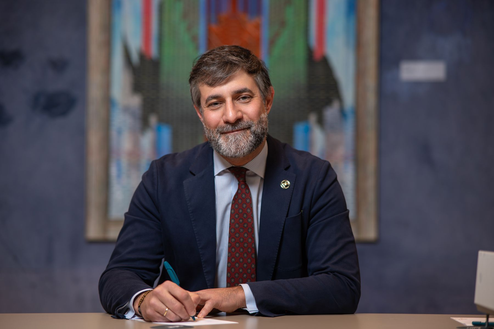
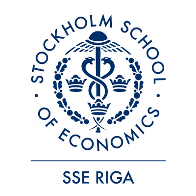
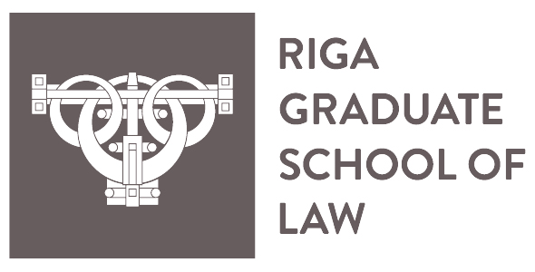
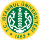

Candidato a Decano · Facultad de Ciencias de la Economía y de la Empresa
Elecciones:
Trabajo visible, resultados medibles.
Una hoja de ruta renovada y cercana: gestión transparente, participativa y orientada a resultados, con estudiantes, PDI y PTGAS en el centro de las decisiones.

El proyecto
Un proyecto que combina la excelencia académica y científica con una profunda vocación de servicio y cercanía.
La Facultad en cifras
- estudiantes en el curso 2024-25
- 11.002
- los campus en los que imparte docencia la Facultad
- Todos
- valoración docente del estudiante
- 4,10
- satisfacción con los servicios de la URJC
- 3,52
- satisfacción global con la titulación
- 3,60
Valoraciones de Grado, curso 2024-25. El portal de transparencia de la URJC no ofrece los datos de Máster.
Programa
Cinco líneas de trabajo.
Hacia la excelencia académica y científica, la calidad de la docencia, la innovación docente y la proyección institucional.
-
Estudiantes
Que la calidad de la docencia sea nuestra señal de identidad y que cada estudiante encuentre acogida, formación útil y voz en la Facultad.
Ver objetivos y medidas
Calidad de la docencia y adaptación normativa
- Acciones para convertir la calidad de la docencia en nuestra señal de identidad.
- Implantación de los cambios normativos (RD) en la docencia.
Oferta de posgrado
- Oferta completa y variada, coordinada con el Rectorado: másteres profesionales y de perfil investigador, online y presenciales.
Calidad y acreditación
- Oficina de apoyo a los procedimientos de calidad, con personal PTGAS, para la renovación de acreditaciones y las implantaciones.
- Acreditación Institucional de la Facultad, coordinada con el Rectorado, para renovar la acreditación de las titulaciones sin el procedimiento del Real Decreto 822/2021.
Acogida y acompañamiento académico
- Seminario de bienvenida en 1.º: cómo funciona la Facultad y sus principios de conducta y ética académica.
- Apoyo en los primeros cursos para aumentar la participación del estudiante en la Facultad.
- TFG: curso de formación en citación y seminario para elegir tema, con estudiantes que ya lo han presentado (3.º de grado y 4.º de doble grado).
Formación y empleabilidad
- Microcredenciales que enriquecen el currículum y facilitan la inserción laboral.
- Business & Science Lab (espacio de incubación), ferias sectoriales y convenios de prácticas de alta calidad.
- Proyectos de Aprendizaje-Servicio: aprender haciendo un servicio útil a los demás.
Espacios, exámenes y tamaño de las clases
- Espacios colaborativos modernos y con tecnología.
- Mejor asignación de espacios para exámenes y sin exámenes en sábado.
- Revisión de cupos para evitar clases masivas, sobre todo en grados con estudiantes internacionales.
Participación y vida universitaria
- Canal digital de sugerencias con respuesta garantizada y un porcentaje del presupuesto anual para proyectos hechos con los estudiantes.
- Apoyo a las asociaciones solidarias y humanitarias y colaboración con las asociaciones de estudiantes.
- Impulso a la red Alumni.
Cómo lo mediremos [INDICADOR PÚBLICO Y PLAZO]
-
Personal Docente e Investigador (PDI)
Que el trabajo del profesorado se reconozca según el número de estudiantes y la dirección de TFG y TFM.
Ver objetivos y medidas
Reconocimiento del número de estudiantes por grupo
- Reconocimiento del profesorado acorde al volumen de estudiantes, con desdobles y el reconocimiento práctico que tienen otras áreas de conocimiento.
- Gestión de cupos de estudiantes homogéneos, en colaboración con el Rectorado.
Reconocimiento académico de TFG y TFM
- Reconocimiento por la tutela de TFM.
- Nuevo plan de reconocimiento de TFG y TFM, diseñado con el Rectorado.
- Reconocimiento por formar parte de tribunales de TFG y TFM.
Cómo lo mediremos [INDICADOR PÚBLICO Y PLAZO]
-
Personal Técnico de Gestión de Administración y Servicios (PTGAS)
Carrera profesional, voz en las decisiones y mejor coordinación con todos los campus.
Ver objetivos y medidas
Carrera, reconocimiento y medios
- Un clima laboral que incentive la carrera profesional interna.
- PTGAS en las comisiones que deciden sobre espacios, atención al estudiante y procesos administrativos de la Facultad.
Conciliación y coordinación con los campus
- Mejor coordinación con los gerentes de todos los campus en los que imparte docencia la Facultad.
Cómo lo mediremos [INDICADOR PÚBLICO Y PLAZO]
-
Instalaciones, proyección social y relaciones institucionales
Una Facultad abierta a la sociedad, conectada con empresas, instituciones y universidades, y con instalaciones a la altura.
Ver objetivos y medidas
Divulgación y proyección exterior
- Divulgación cultural y científica vinculada a las áreas de conocimiento de la Facultad.
- Plan de comunicación para estudiantes de bachillerato y vínculos más fuertes con centros superiores.
- Jornadas de puertas abiertas y vínculos activos con los organismos de apoyo del Rectorado.
Sinergias con el entorno
- Colaboración con empresas e instituciones de cada campus para reforzar el vínculo con la sociedad y el desarrollo socioeconómico.
- Diálogo constante con los equipos decanales y de dirección de otras facultades y escuelas para fortalecer los dobles grados.
Movilidad e internacionalización
- Relaciones con universidades nacionales e internacionales, programas de intercambio y materias o seminarios en inglés.
- Participación de la Facultad en la red europea EULiST.
- Programa de bienvenida para el profesorado internacional que visita la Facultad.
Mejora del aulario de Vicálvaro
- Estudio de la instalación de aire acondicionado o ventiladores.
Colaboración con los centros adscritos
- Programa de colaboración docente, formativa, divulgativa (manuales conjuntos) y de investigación.
- Diálogo constante para fortalecer la oferta formativa de la Facultad.
Cómo lo mediremos [INDICADOR PÚBLICO Y PLAZO]
-
Innovación docente y apoyo a la investigación
Más medios para innovar en el aula y más apoyo y reconocimiento para investigar y transferir.
Ver objetivos y medidas
Coordinación y nuevas metodologías
- Coordinador de curso por grado (cuatro profesores por grado), en coordinación con el Rectorado.
- Innovación en técnicas pedagógicas, contenidos, visitas a centros y participación de personal externo.
Financiación y formación para la innovación
- Convocatorias internas para proyectos de gamificación, simuladores de negocio, aprendizaje basado en retos e IA aplicada al aula.
- Formación continua del PDI y del PTGAS en metodologías pedagógicas y uso ético de la IA generativa.
Apoyo y reconocimiento de la actividad investigadora
- Reconocimiento de los investigadores: difusión de su participación en proyectos y de sus líneas de investigación.
- Defender en la comisión de investigación criterios de evaluación adecuados a las áreas de la Facultad.
Transferencia y proyectos
- Congresos y formas innovadoras de transferencia de tecnología y conocimiento.
- Colaboración con la Oficina de Apoyo a Proyectos Europeos.
- Grupos de trabajo interdisciplinares para promover spin-offs y patentes.
Cómo lo mediremos [INDICADOR PÚBLICO Y PLAZO]
Para ti
¿Qué cambia para ti?
Lo que cambia para los estudiantes.
- Seminario de bienvenida en 1.º y apoyo en los primeros cursos.
- TFG: curso de citación y seminario para elegir tema.
- Microcredenciales que enriquecen tu currículum y facilitan tu inserción laboral.
- Business & Science Lab, ferias sectoriales y prácticas de alta calidad.
- Espacios colaborativos modernos y sin exámenes en sábado.
- Revisión de cupos para evitar clases masivas.
- Canal digital de sugerencias con respuesta garantizada y presupuesto participativo.
- Apoyo a las asociaciones de estudiantes y a la red Alumni.
Lo que cambia para el PDI.
- Reconocimiento acorde al número de estudiantes por grupo, con desdobles.
- Cupos de estudiantes homogéneos, con el Rectorado.
- Reconocimiento por tutela de TFM y por formar parte de tribunales de TFG y TFM.
- Nuevo plan de reconocimiento de TFG y TFM.
- Convocatorias internas de innovación docente: gamificación, simuladores, retos e IA en el aula.
- Formación continua en metodologías y uso ético de la IA generativa.
- Reconocimiento y difusión de tu investigación, y criterios de evaluación adecuados a nuestras áreas.
- Congresos, transferencia, proyectos europeos, spin-offs y patentes.
Lo que cambia para el PTGAS.
- Un clima laboral que incentive la carrera profesional interna.
- Presencia en las comisiones que deciden sobre espacios, atención al estudiante y procesos administrativos.
- Mejor coordinación con los gerentes de cada campus.
- Oficina de apoyo a la calidad con personal PTGAS.
- Formación continua en metodologías y uso ético de la IA generativa.
Encuentros
Café con el candidato.
Antes de cerrar el programa, quiero escucharte en tu campus.
En los campus de Móstoles, Vicálvaro y Fuenlabrada. Horarios y lugares, por confirmar.
- Cargando los próximos encuentros…
Elecciones a Decano
Cómo votar.
Votan el estudiantado, el profesorado y el PTGAS de toda la Facultad. El voto es presencial y ponderado.
-
Cuándo
, de 9 a 20 h. Si hace falta, segunda vuelta el .
-
Dónde
[MESAS ELECTORALES · pendiente de la Junta Electoral]
-
Qué llevar
DNI, pasaporte, carné de conducir o carné de la URJC.
-
Voto anticipado
Se puede votar en el registro de la Universidad el 23 o el 26 de octubre, o por correo certificado con entrada en el registro antes del 28.
Peso de cada colectivo
- PDI doctor con vinculación permanente
- 53 %
- Estudiantado
- 21 %
- Resto del PDI
- 15 %
- PTGAS
- 11 %
Gana en primera vuelta quien supere el 50 % de los votos ponderados. Fuente: convocatoria de 29 de septiembre de 2026 y Reglamento para las elecciones a Decano (BOURJC n.º 82).
Quién soy
Camilo Prado Román.
Catedrático de Economía Financiera y Contabilidad en el Departamento de Economía de la Empresa de la URJC. Presido la European Academy of Management and Business Economics (AEDEM). Investigo cómo las organizaciones ganan legitimidad, cómo la inteligencia artificial anticipa los mercados y cómo el bienestar retiene el talento.
- Sexenios de investigación
- 2
- Quinquenios docentes
- 4
- Evaluación Docentia
- Muy favorable
- Presidente
- AEDEM
Currículum y perfiles de investigador
Apoyo internacional
Respaldo internacional.
Universidades que trabajan con la URJC apoyan la candidatura con su carta.
-


I therefore offer my highest recommendation and full support for Professor Camilo Prado Román’s candidacy.
«Por todo ello, ofrezco mi más alta recomendación y mi pleno apoyo a la candidatura del profesor Camilo Prado Román.»
Natalja Tocelovska Associate Professor · Stockholm School of Economics in Riga y Riga Graduate School of Law Cooperación con la URJC desde hace años: intercambio Erasmus de estudiantes y de profesorado.
Leer la carta (PDF, en inglés) -

Istanbul University therefore gives its full support and highest recommendation to Professor Camilo Prado Román.
«Por ello, la Universidad de Estambul da su pleno apoyo y su más alta recomendación al profesor Camilo Prado Román.»
Prof. Gürel Çetin Head of Department, Tourism Management · Faculty of Economics, Istanbul University Colaboración en publicaciones (Journal of Tourismology y Journal of Economy, Culture and Society) y en congresos internacionales.
Leer la carta (PDF, en inglés)
Compromiso
Gobernar en abierto.
…una facultad con alrededor de 11.000 estudiantes debe gestionarse mediante una gobernanza abierta, transparente y orientada a resultados…
-
Representación activa
El decano y su equipo mantendrán un contacto constante con departamentos, áreas, profesorado, PTGAS y alumnado.
-
Cuentas claras
Informaremos a la Junta de Facultad sobre la asignación presupuestaria.
-
Un programa abierto
Queremos contar con toda la comunidad universitaria para mejorar y completar este programa.
Contacto
Escríbeme.
Leo todos los mensajes. Tu propuesta puede acabar en el programa.
¿Prefieres el correo? Escríbeme a hola@camilopradoroman.es.